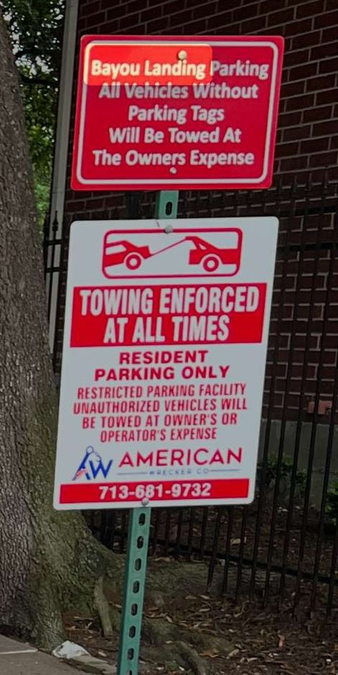

Parking
Bayou Landing has two parking zones, shown on the map below: a patrolled orange zone along the main stretch of Ann St that connects both gates, and an unpatrolled green zone on the street segments directly in front of homes.
Towing zone map
Tap a colored street on the map for the rules that apply to it.
Orange zone — patrolled
The main stretch of Ann St that connects both gates.
- A permit must be clearly visible on the front window.
- Vehicles without one may be towed at the owner’s expense.
Green zone — not patrolled
The secondary Ann St segments directly in front of the homes.
- The tow company is not allowed to patrol this zone, and there is no automatic towing here.
- A tow happens only if a car is blocking a resident’s vehicle, driveway or pedestrian path, and only when a resident requests it.
Towing
Towing for the community is performed by American Wrecker Co., as shown on the posted signs.
Resident-requested tows
A resident may request a tow for a violation in any area, including the green zone. To request one, the resident must show photo ID or a printed document showing their address, proving they have access rights to the home whose vehicle, driveway or pedestrian path is obstructed.
What is never towed
Private driveways are never towed. Your own driveway is your own; a vehicle sitting in it is not a towing matter.
After a tow
After every tow, the tow company notifies Principal Management Group and the Board.
If your car was towed
Call the tow company first, then tell management and copy the Board so the record matches up:
- American Wrecker Co. — 713-681-9732
- Principal Management Group — see the contact page
- Board — bayoulandinghoa@gmail.com

Permits
- Resident parking stickers are issued through Principal Management Group — see the contact page — or request one through TownSq.
- Guest passes — there currently are none. The Board is working on a solution. In the meantime, ask your guests to park in a driveway or garage rather than the orange zone.
- Displayed means visible from outside the vehicle, on the front window, in the location you were told to place it when it was issued. A permit in the glove box, face-down on a seat, or on a vehicle it was not issued for does not count as displayed.
- Not transferable — permits are tied to the unit and the vehicle they were issued for.
Practical notes
- Do not block a driveway, a gate, a fire lane, a dumpster enclosure, or a neighbor’s access — these create safety problems independent of the zone rules.
- Park within a single marked space.
- Inoperable, unregistered and stored vehicles, along with trailers and recreational vehicles, are separately restricted by the recorded Declaration of Covenants and Restrictions and the Architectural Control Guidelines.
- If your household’s vehicles change, update management so your permits stay accurate.